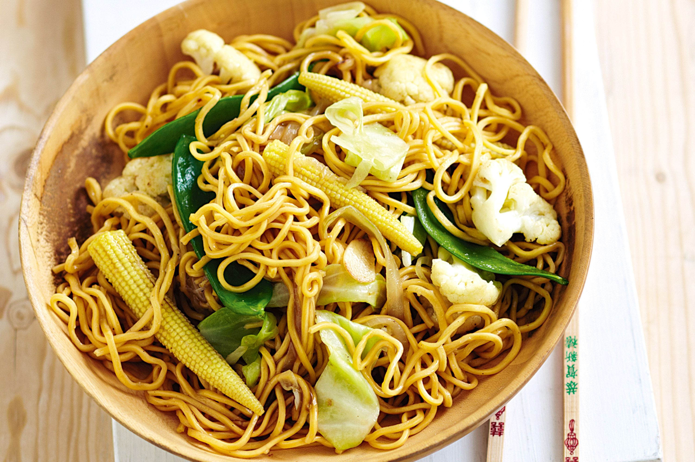

Popular Dishes
Popular dishes include:
- Dumplings
- Wontons
- Chow mein
- Fried rice
Cuisine
Chinese cuisine is an important part of Chinese culture, which includes cuisine originating from the diverse regions of China, as well as from Chinese people in other parts of the world. Because of the Chinese diaspora and historical power of the country, Chinese cuisine has influenced many other cuisines in Asia, with modifications made to cater to local palates.
| Cuisine | Features |
|---|---|
| Shandong | Seafood |
| Hunan | Hot and spicy food |
| Zhejiang | Seafood |
| Jiangsu | Royal Cuisine |
| Fujian | Soup |
| Sichuan | Spciy flavors |
| Anhui | Vegetables |
| Cantonese | Stir fry |
To learn more, click here.
